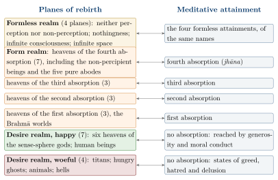
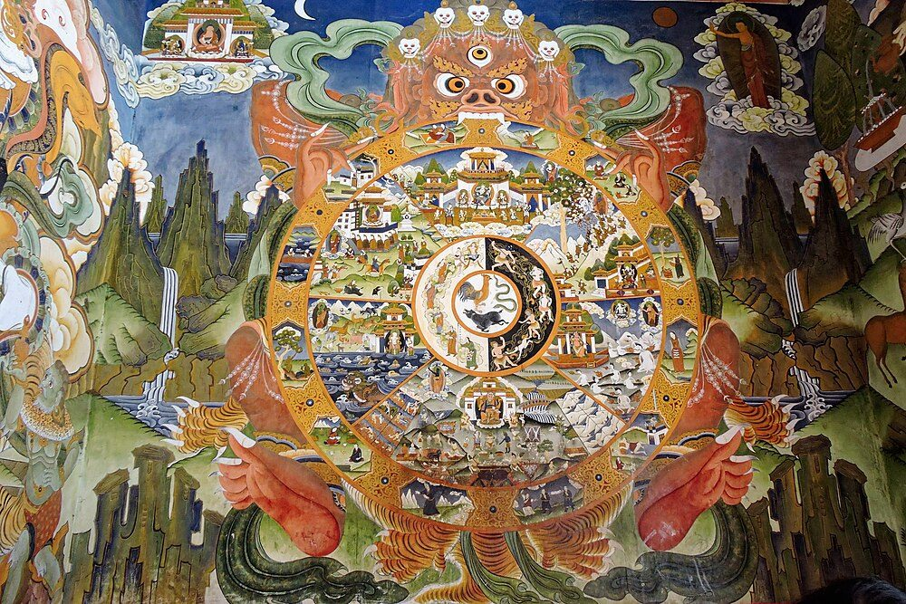
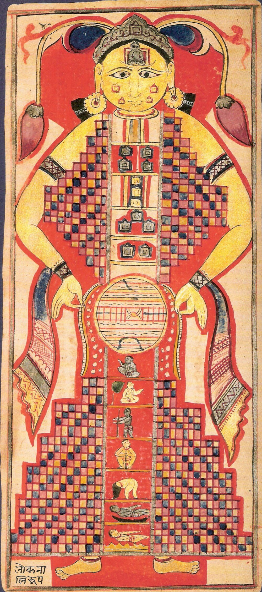
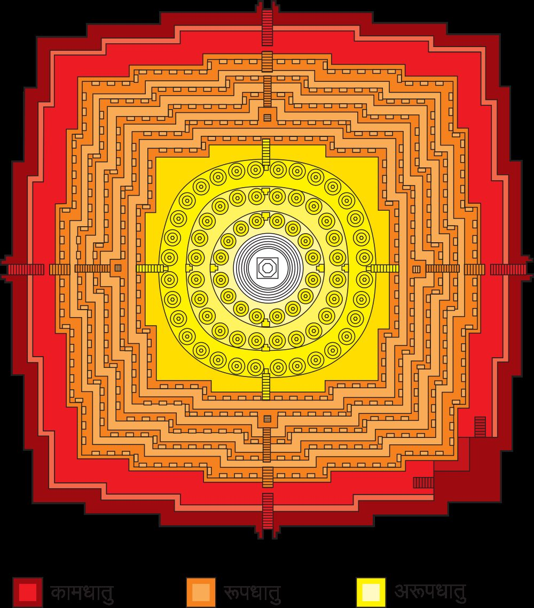

Chapter 3: Buddhist and Jain Cosmologies¶
anekajātisaṃsāraṃ sandhāvissaṃ anibbisaṃ
gahakāraṃ gavesanto dukkhā jāti punappunaṃ
Through the round of many births I have run, not finding, seeking the builder of the house. Painful is birth again and again.
— Dhammapada 153
3.1 Two Cosmologies Without a Creator¶
The Buddhist and Jain traditions grew up in the same region and period — the middle Ganges valley in the fifth century BCE, among the many renunciant (śramaṇa) movements that rejected the authority of the Veda and the claims of Brahmin priests. The Buddha (c. 480–400 BCE on the now widely accepted short chronology; traditional Theravāda dates 624–544 BCE, and the older “long” chronology c. 563–483 BCE) and Mahāvīra (an older contemporary; traditional Śvetāmbara dates 599–527 BCE) both taught that beings are bound to a beginningless round of rebirth by their own actions and that the goal of the religious life is release from it. Both developed, in the following centuries, a detailed cosmology. And both denied that the world was made by a creator god.
These shared premises make the two cosmologies easy to confuse with each other and with the Purāṇic cosmology of the previous chapter, which borrowed from them as freely as they borrowed from it. Mount Meru, a continent called Jambudvīpa, a southern land of action, heavens of gods and hells of tortured beings appear in all three. Yet the differences are profound. For Buddhists the world-systems arise and pass away through the collective karma of beings, and the highest realms are states of meditative absorption; for Jains the universe is eternal, uncreated and of fixed shape, and karma is a subtle form of matter. This chapter describes each in turn and then compares them. Both traditions are treated more fully in Volume 4.
3.2 The Buddhist Universe¶
3.2.1 Sources¶
The earliest Buddhist texts, the discourses (sutta) of the Pali canon and their counterparts preserved in Chinese and other languages, contain many cosmological passages but no system. Systematisation came in the Abhidharma literature of the scholastic schools. The most influential synthesis is Vasubandhu’s Abhidharmakośa with its auto-commentary (4th–5th century CE), whose third chapter, “Exposition of the World” (Lokanirdeśa), became the basis of cosmology in East Asian and Tibetan Buddhism; in the Theravāda world the corresponding role was played by the Pali commentaries and by later works such as the fourteenth-century Thai Traibhūmikathā (Gethin 1998; Sadakata 1997; Kloetzli 1983).
3.2.2 No first beginning and no creator¶
The Buddha is represented as refusing to speculate about the first beginning of the round of rebirth. In a group of discourses on “the inconceivable beginning” in the Saṃyutta Nikāya, he tells his monks that a first point of beings’ wandering cannot be discerned, and illustrates the length of an aeon with similes: a mountain of solid rock a league high, brushed with a cloth once a century, would be worn away before an aeon ended; a city of mustard seeds, from which one seed is removed every hundred years, would be emptied first.
The Brahmajāla Sutta (the first discourse of the Dīgha Nikāya) offers an ironic account of how the belief in a creator arises. When a world-system re-forms after a period of dissolution, the first being to be reborn in the newly appeared realm of Brahmā is alone for a long time and wishes for company. When other beings appear, he concludes that he made them, and they agree, since he was there before them. The god who claims to be creator is thus a being in the round of rebirth, mistaken about his own status. The Aggañña Sutta (Dīgha Nikāya 27) similarly tells the story of the re-formation of the world and the origin of human society, in a way that pointedly denies the Brahmins’ claim to have been born from the mouth of Brahmā (Gethin 1998).
3.2.3 The three realms and the thirty-one planes¶
The Buddhist universe is organised by kinds of experience. It has three “realms” (dhātu): the realm of desire (kāmadhātu), in which beings have bodies and sense-desires; the realm of form (rūpadhātu), in which beings have subtle bodies but no sensual desire; and the formless realm (ārūpyadhātu), in which there is mind without body. In the Theravāda reckoning these comprise thirty-one planes of existence, summarised in Table 3.1; the Sarvāstivāda count used in the Abhidharmakośa differs slightly in the form realm.
| Realm | Planes | Contents |
|---|---|---|
| Formless (arūpa) | 4 | infinite space; infinite consciousness; nothingness; neither perception nor non-perception — the four formless meditative attainments |
| Form (rūpa) | 16 | heavens of the Brahmā gods corresponding to the four meditative absorptions (jhāna): three for each of the first three, seven for the fourth, including the realm of non-percipient beings and the five “pure abodes” where only non-returners are reborn |
| Desire (kāma), happy | 7 | human beings; six heavens of the sense-sphere gods, among them the heaven of the Thirty-Three (Indra’s world) and the Tusita heaven, where a future Buddha waits |
| Desire (kāma), woeful | 4 | hells; animals; hungry ghosts (peta); titans (asura) |
The higher realms correspond to the meditative states cultivated by monks: to attain the first absorption in this life is to experience what the gods of the corresponding Brahmā heavens experience, and to be reborn there if one dies in that state (Figure 3.1). The cosmology is thus also a map of mind, a point taken up at the end of this chapter.

3.2.4 The world-system¶
Each world-system (cakravāla, Pali cakkavāḷa) has at its centre Mount Sumeru (Meru), surrounded by seven concentric rings of golden mountains separated by seas. In the outer ocean lie four continents: Jambudvīpa in the south, where humans like ourselves live and where Buddhas appear; Pūrvavideha in the east; Aparagodānīya in the west; and Uttarakuru in the north, a land of ease. The sun and moon circle Sumeru at the level of its middle slopes, and an iron mountain wall surrounds the whole. The heavens of the four guardian kings and of the Thirty-Three are on and above Sumeru; the higher heavens float above in space; the hells lie beneath Jambudvīpa.
There are innumerable world-systems. The early discourses already speak of “a thousandfold” world-system; the Abhidharmakośa describes a “small” chiliocosm of a thousand world-systems, a “middle” one of a thousand of these, and a “great trichiliocosm” of a thousand middle ones, which is the field of a single Buddha. Mahāyāna sūtras multiply these further into world-systems as numerous as the grains of sand in the Ganges, each potentially the “field” (buddhakṣetra) of a Buddha.
3.2.5 The aeons¶
The duration of the universe is described not by exact figures, as in the Purāṇas, but by similes and by structure. A “great aeon” (mahākalpa) has four phases, each called “incalculable” (asaṃkhyeya): dissolution, the period of remaining dissolved, re-formation, and the period of remaining formed. During the last, human lifespan rises and falls in “intermediate aeons” (antarakalpa) between ten years and many thousands of years, and the quality of life rises and falls with it. A world-system is destroyed by fire, water or wind, which reach up to different levels of the form realm; beings in the higher realms survive and repopulate the lower ones when the world re-forms. The Bodhisattva’s career, in the Mahāyāna account, takes three incalculable aeons.
3.2.6 Hells¶
The Abhidharmakośa lists eight hot hells, one below another beneath Jambudvīpa — Saṃjīva (“reviving”), Kālasūtra (“black thread”), Saṃghāta (“crushing”), Raurava (“howling”), Mahāraurava (“great howling”), Tapana (“heating”), Pratāpana (“great heating”) and Avīci (“without interval”) — each surrounded by subsidiary hells, and eight cold hells named after the cries of their inhabitants or the appearance of their frozen skin (Arbuda, Nirarbuda, Aṭaṭa, Hahava, Huhuva, Utpala, Padma, Mahāpadma). Detailed descriptions of the hells and of the god of death questioning the dead appear already in the early discourses, for example the Devadūta Sutta (Majjhima Nikāya 130). Even the lowest hell is not eternal: a being remains there until the karma that brought it there is exhausted.
3.2.7 The wheel of becoming¶
The Buddhist universe was given its most famous visual form in the “wheel of becoming” (bhavacakra), painted at the entrances of monasteries (Figure 3.2). A narrative in the Divyāvadāna attributes its design to the Buddha himself and prescribes it for monastery gateways; a fragmentary early example survives in the paintings at Ajanta, and it is ubiquitous in Tibetan and Himalayan monasteries. The wheel is held by a fearsome figure representing death or impermanence. At its hub a pig, a snake and a cock represent delusion, hatred and greed; around them beings rise and fall; the main field shows the realms of rebirth (gods, titans, humans, animals, hungry ghosts and hell beings); and the rim depicts the twelve links of dependent origination. Outside the wheel the Buddha points to the moon or to the way of release.


The twelve links (nidāna) of dependent origination (pratītyasamutpāda) explain how beings continue in the round. A standard formula in the Saṃyutta Nikāya begins:
Saṃyutta Nikāya 12.1
avijjāpaccayā, bhikkhave, saṅkhārā; saṅkhārapaccayā viññāṇaṃ;
viññāṇapaccayā nāmarūpaṃ; nāmarūpapaccayā saḷāyatanaṃ …
With ignorance as condition, monks, volitional formations; with formations as condition, consciousness; with consciousness as condition, name-and-form; with name-and-form as condition, the six sense-bases …
The series continues through contact, feeling, craving, grasping, becoming and birth to ageing-and-death. Its point is soteriological: since each link depends on the one before, the cessation of ignorance and craving brings the whole chain to an end. The cosmos is, in this sense, sustained by the same process that sustains an individual life, and the world-systems themselves arise through the collective karma of the beings who will inhabit them.
3.2.8 Mahāyāna and Vajrayāna developments¶
Mahāyāna sūtras transformed the older cosmology in two ways. First, they multiplied the number of Buddhas and their “fields”. The Pure Land sūtras describe Sukhāvatī, the western paradise of the Buddha Amitābha, where conditions for enlightenment are perfect (see below). The Avataṃsaka (“Flower Ornament”) literature describes a universe in which every world contains all others and every atom reflects every world — the image later known in East Asia as the jewelled net of Indra. Second, the Mahāyāna doctrine of emptiness (śūnyatā) relativised the whole cosmology: the realms are real at the level of conventional truth but empty of intrinsic existence. The Kālacakra Tantra (early 11th century) developed an elaborate correspondence between the outer cosmos, the inner body and the meditative path, and gave its name to the Tibetan calendar.
In modern times Tibetan teachers such as Chögyam Trungpa, writing for Western audiences, presented the six realms of the wheel as psychological states through which a person may pass in a single day — the god realm as complacent pleasure, the hell realm as rage, and so on. The reading draws on the traditional link between realms and states of mind, but it is a modern interpretation and not a replacement for the traditional belief in rebirth.
3.2.9 Cosmology and kingship¶
In the Theravāda kingdoms of Southeast Asia, cosmology was also political theory. The Traibhūmikathā (“Discourse on the Three Worlds”), attributed to the fourteenth-century prince Lithai of Sukhothai in present-day Thailand, describes the three realms in detail in order to show the results of good and bad actions, and presents the righteous king, modelled on the ideal “wheel-turning” emperor (cakravartin) of the Buddhist texts and on Aśoka, as the human counterpart of the cosmic order. Royal capitals were laid out as images of Mount Sumeru and its surrounding continents, and coronation rituals placed the king at the axis of the world. The cosmology thus legitimised kingship and, at the same time, set before kings an ideal of righteous rule by which they could be judged.
3.3 Other Śramaṇa Views¶
Buddhism and Jainism were not the only renunciant movements of the eastern Ganges valley, and their cosmologies were formed in argument with others. The Pali Sāmaññaphala Sutta (Dīgha Nikāya 2) describes six teachers who were contemporaries of the Buddha, among them Makkhali Gosāla, leader of the Ājīvikas. As reported there by his opponents, Gosāla taught that all beings pass through a fixed course of rebirths over eighty-four hundred thousand great aeons, at the end of which fools and wise alike make an end of suffering, like a ball of thread that unwinds to its full length when thrown; human effort can neither hasten nor delay the process. Ajita Kesakambalī, another of the six, is reported to have taught that a person is made of four elements which return to earth, water, fire and air at death, and that there is no other world and no fruit of good or bad deeds — a view close to that later attributed to the Cārvākas. Pūraṇa Kassapa is reported to have denied that actions have moral consequences, and Pakudha Kaccāyana to have taught that seven eternal bodies, including pleasure, pain and the soul, are uncreated and unaffected by killing.
These positions survive only in the reports of their Buddhist and Jain opponents, so their details must be treated with caution. They show, nonetheless, that the questions of the age — whether actions have results, whether there is a soul, whether liberation can be achieved by effort, how long the round of rebirth lasts — received many different answers, and that the Buddhist and Jain cosmologies were deliberate choices among them. The Ājīvikas survived for many centuries; Aśoka and his grandson Daśaratha dedicated caves in the Barabar hills to them, and they are mentioned in South Indian inscriptions into the second millennium.
3.4 Theories of Time¶
Cosmologies measure time; philosophers asked what it is. The Indian schools gave sharply different answers, and the debate cut across the boundaries between Hindu, Buddhist and Jain.
The Vaiśeṣika school counted time (kāla) among its nine substances: a single, eternal, all-pervading entity, inferred from our cognitions of “earlier” and “later”, “simultaneous” and “slow” and “quick”. Nyāya agreed. The Sāṃkhya school, by contrast, did not treat time as an independent substance; temporal distinctions arose from the transformations of matter. Advaita Vedānta held that time, like all distinctions, belongs to the empirical order and is ultimately unreal, since Brahman is changeless.
Buddhist philosophers developed the most radical theories. Most schools held that conditioned things are momentary (kṣaṇika): what appears to be an enduring object is a series of momentary events, each arising and perishing, causally connected to the next. The Sarvāstivāda (“everything exists”) school held that past and future events exist as well as present ones, which explains how past karma can produce future effects; the Sautrāntikas rejected this and held that only the present moment exists, the past having left traces in the stream of consciousness. The logicians Dignāga and Dharmakīrti argued that only what is causally efficient is real, and that whatever is causally efficient must be momentary. These debates, which engaged Nyāya and Mīmāṃsā critics for centuries, are among the most sophisticated discussions of time and change in pre-modern philosophy (Gethin 1998).
The Jains, as described below, counted time as a substance on some views and defined its smallest unit, the samaya, as the time taken by an atom to move from one point of space to the next. Modern writers have compared the Buddhist doctrine of momentariness with the process philosophy of Whitehead and with theories of time in physics. The comparison with Whitehead, a philosophical position about the nature of events, is a genuine philosophical comparison; claims that the Buddhists anticipated relativity or quantum theory are not.
3.5 The Jain Universe¶
3.5.1 Sources¶
The Jain canonical texts (preserved in different forms by the Śvetāmbara and Digambara communities) contain extensive cosmographical material, notably the Śvetāmbara Sūryaprajñapti, Candraprajñapti and Jambūdvīpaprajñapti. The basic systematic statement accepted by both communities is Umāsvāti’s Tattvārthasūtra, a Sanskrit compendium usually placed between the second and fifth centuries CE (Umāsvāti 1994). Later treatises such as the Digambara Tiloyapaṇṇatti of Yativṛṣabha and the Trilokasāra of Nemicandra (10th century) elaborate the details. Padmanabh Jaini and Paul Dundas provide clear introductions (Jaini 1979; Dundas 2002).
3.5.2 An eternal universe of fixed shape¶
For the Jains the universe (loka) was never created and will never be destroyed. It has a definite shape and size and is surrounded on all sides by infinite empty space (aloka), which contains nothing. The occupied universe is often depicted as a giant human figure, the “cosmic person” (lokapuruṣa), standing with hands on hips (Figure 3.3). Its height is fourteen rajju, a unit of immense length. It has three parts:
-
the lower world (adholoka), the legs and hips of the figure, containing seven hells, one below the other, each darker and more painful than the last;
-
the middle world (madhyaloka), the narrow waist, a vast flat disc of ring-shaped continents and oceans in which humans and animals live;
-
the upper world (ūrdhvaloka), the chest and head, containing the heavens of the gods; at the very top, in the forehead of the figure, is the crescent-shaped abode of the liberated (siddhaśilā or īṣatprāgbhārā).
A narrow vertical “channel” (trasanāḍī) through the middle of the universe is the only part in which mobile beings live; the rest is filled with the simplest one-sensed beings.


3.5.3 The middle world¶
At the centre of the middle world is Jambudvīpa, a disc 100,000 yojanas in diameter with Mount Meru at its centre. It is surrounded by the Lavaṇa (salt) ocean, then by the continent Dhātakīkhaṇḍa, the Kālodadhi ocean, the continent Puṣkaravara, and so on in an innumerable series of rings, each twice as broad as the one within it. Humans can live only in Jambudvīpa, Dhātakīkhaṇḍa and the inner half of Puṣkaravara, which is cut off by the Mānuṣottara mountains; this region is the “two and a half continents” (aḍhāī dvīpa). Within them, only certain regions — including Bharata in the south of Jambudvīpa, Airāvata in the north and Videha around Meru — are “lands of action” (karmabhūmi) where liberation is possible. In Videha, Jains hold, tīrthaṅkaras are always teaching, even when none is present in Bharata.
3.5.4 Hells and heavens¶
The seven hells are named after their light or darkness: Ratnaprabhā (“gem-lustre”), Śarkarāprabhā (“gravel”), Vālukāprabhā (“sand”), Paṅkaprabhā (“mud”), Dhūmaprabhā (“smoke”), Tamaḥprabhā (“darkness”) and Mahātamaḥprabhā (“great darkness”). The Tattvārthasūtra (3.6) gives the maximum lifespans in them as 1, 3, 7, 10, 17, 22 and 33 “ocean-measured” periods (sāgaropama). Above the middle world are the heavens: twelve “kalpa” heavens in the Śvetāmbara count (sixteen in the Digambara), then nine “neck” (graiveyaka) heavens and five “unsurpassed” (anuttara) heavens, with an additional group in the Digambara system. No heaven is the goal: the gods, too, must be reborn as humans before they can attain liberation.
3.5.5 The six substances¶
The Jain universe is constituted by six eternal substances (dravya): souls (jīva), infinite in number; matter (pudgala), made of indivisible atoms (paramāṇu) with qualities of touch, taste, smell and colour; the medium of motion (dharma) and the medium of rest (adharma), which pervade the occupied universe and make movement and stillness possible; space (ākāśa), divided into the space of the universe and the empty space beyond; and time (kāla). The status of time was debated: the Śvetāmbara recension of the Tattvārthasūtra reports it as a separate substance only on the view of “some” (kālaś cety eke), whereas the Digambara recension lists it without qualification, and the two traditions differ on the point. The Jain use of dharma for a medium of motion is unique to Jainism and has nothing to do with the ethical sense of the word. The media of motion and rest also explain why the universe has a boundary: liberated souls, which naturally rise, stop at the top of the universe because the medium of motion does not extend beyond it.
3.5.6 Karma as matter¶
Jain thought is distinctive in treating karma as a fine form of matter. Passions — anger, pride, deceit and greed — make the soul “sticky”, so that karmic particles flow into it (āsrava) and bind it (bandha). The Jains classified karma into eight types: four “destructive” (ghātiyā) types that obscure the soul’s innate knowledge, perception, bliss and energy (knowledge-obscuring, perception-obscuring, deluding and obstructing karma) and four “non-destructive” (aghātiyā) types that determine the conditions of embodiment (feeling, lifespan, body and status). Liberation requires stopping the inflow of new karma (saṃvara) and shedding the old (nirjarā), above all by austerity. The soul’s progress is mapped onto fourteen “stages of quality” (guṇasthāna), from the wrong view of the deluded through the partial vows of the lay person and the full vows of the ascendant monk to the omniscient states of the living and the about-to-be-liberated kevalin (Jaini 1979). When all karma is shed, the soul rises to the top of the universe and remains there for ever in infinite knowledge, perception, bliss and energy.
3.5.7 The wheel of time¶
Time, too, is eternal and cyclical. It turns in a wheel of two halves: a descending half (avasarpiṇī), in which happiness, stature and lifespan decline, and an ascending half (utsarpiṇī), in which they increase. Each half lasts ten koṭākoṭi sāgaropamas (a koṭākoṭi is ten million multiplied by ten million), and each is divided into six “spokes” (ara), from “very happy” (suṣama-suṣamā) through “happy”, “happy-unhappy” and “unhappy-happy” to “unhappy” (duḥṣamā) and “very unhappy”. The fifth spoke of the present descending half, the “unhappy” age, began shortly after the death of Mahāvīra and lasts 21,000 years. The sāgaropama itself is defined by an analogy: a pit a yojana across is packed with the finest hairs, one hair is removed every hundred years, and the time it takes to empty the pit is a palyopama; ten koṭākoṭi palyopamas make one sāgaropama.
In each half-cycle, in each land of action, twenty-four tīrthaṅkaras (“ford-makers”) appear and re-establish the Jain teaching, together with other “illustrious persons” — twelve universal emperors and three sets of nine heroes and their adversaries — making sixty-three in all. Ṛṣabha, the first tīrthaṅkara of our half-cycle, is said to have lived at its beginning and taught humanity agriculture and the arts; Mahāvīra was the twenty-fourth. The tīrthaṅkaras are human beings who attained omniscience, not gods or creators.
3.5.8 Sacred geography¶
Jain cosmography is not only a matter of manuscripts. Beyond the two and a half continents lies Nandīśvaradvīpa, the eighth continent, which humans cannot reach but where the gods worship in fifty-two eternal temples; models and paintings of Nandīśvaradvīpa are found in Jain temples, and devotees honour it in ritual. On earth, Jain pilgrimage centres are associated with the lives and liberation of the tīrthaṅkaras: Sammeta Śikhara (Parasnath hill) in Jharkhand, where twenty of the twenty-four are said to have attained liberation; the temple-covered hill of Śatruñjaya in Gujarat; and many others. The cosmology thus maps onto a landscape of sacred places, as the Purāṇic cosmology does for Hindus (Chapter 2).
3.5.9 Jain mathematics of the infinite¶
To describe this universe the Jains developed a striking mathematical vocabulary. The Anuyogadvāra Sūtra and later texts classify numbers into the countable (saṃkhyāta), the uncountable or innumerable (asaṃkhyāta) and the infinite (ananta), and subdivide each of the last two into several grades. Some modern writers have claimed that this “anticipated” Georg Cantor’s theory of transfinite numbers. Historians of mathematics are more careful. The Jain grades express different orders of magnitude and different kinds of inexhaustibility, and they show genuine reflection on the infinite; but they are not defined by one-to-one correspondence, the concept on which Cantor’s theory rests, and they do not yield his results (Plofker 2009). The Jain contribution deserves study in its own terms, as Volume 11 shows, rather than as a premature version of nineteenth-century set theory.
3.6 The Three Cosmologies Compared¶
Table 3.2 sets out the main points of comparison between the Purāṇic cosmology of Chapter 2 and the Buddhist and Jain systems described above.
| Purāṇic Hindu | Buddhist | Jain | |
|---|---|---|---|
| Origin | emanation from a supreme deity through Sāṃkhya principles; Brahmā as demiurge | beginningless; world-systems arise from collective karma; creator god a deluded being | eternal and uncreated; no creator |
| Structure | seven upper and seven lower worlds; disc of seven continents and seas around Meru | three realms, thirty-one planes; four continents around Sumeru; innumerable world-systems | a single universe in the shape of a cosmic person, finite, within infinite empty space |
| Time | yugas, manvantaras, kalpas; Brahmā’s life of 100 years; given in exact figures | aeons described by similes; four phases of a great aeon | ascending and descending half-cycles of six spokes each |
| Hells | many, temporary | eight hot and eight cold, temporary | seven, temporary |
| Place of humans | Bhāratavarṣa as land of action | Jambudvīpa; human birth rare and precious | two and a half continents; lands of action |
| Liberation | beyond all worlds (Advaita), or in Viṣṇu’s or Śiva’s realm (theistic schools) | nirvāṇa, not a place | the abode of the liberated at the top of the universe |
Several points stand out. The three traditions shared a common stock of images, which circulated among them over centuries; it is often impossible to say who borrowed from whom. They shared the conviction that all embodied existence, even in the highest heaven, is impermanent, and that the human condition is uniquely suited to liberation because it combines suffering enough to motivate the search with freedom enough to pursue it. The Buddhist simile of the blind turtle that surfaces once a century and puts its head through a yoke floating on the ocean (Majjhima Nikāya 129) expresses the rarity of human birth; Jain texts make the same point. And all three cosmologies were above all moral and soteriological maps: they describe where actions lead.
They differed, however, on fundamental questions: whether there is a creator or supreme deity (yes for most Purāṇic theologies, no for Buddhists and Jains); whether the self is permanent (yes for Hindus and Jains, no for Buddhists); whether karma is a moral force (Hindus, Buddhists) or a kind of matter (Jains); and whether liberation is a place (for Jains, the top of the universe) or not. These disagreements were argued with great sophistication for more than a thousand years, and it does no honour to any of the traditions to blur them.
3.7 Arguing About a Creator¶
The question whether the world has a creator was one of the great debates of classical Indian philosophy, and it shows how seriously the traditions took one another’s cosmologies.
The Nyāya theologians offered proofs of the existence of God (īśvara). The most famous, set out by Udayana in the Nyāyakusumāñjali (c. 11th century), argues from the world as an effect: things such as the earth are produced, every product has an intelligent maker who knows its material causes, and since no human being could have made the earth, there must be an omniscient maker. Further arguments appealed to the need for a conscious agent to combine atoms at the beginning of creation, to distribute the fruits of karma justly, and to be the author of the Veda and the source of the conventional meanings of words. The Nyāya God is a designer and administrator of the world, not its material cause.
Buddhist philosophers attacked these arguments. Dharmakīrti (c. 7th century) and his successors, culminating in Ratnakīrti’s treatise refuting the proofs of God (11th century), argued that the inference from “being an effect” to “having an intelligent maker” is valid only for things like pots, which we have seen being made; that the earth, mountains and trees are not known to be effects of that kind; that a permanent, unchanging God could not be the cause of changing things; and that the variety of the world is sufficiently explained by the karma of beings. The Mīmāṃsā school also rejected a creator, because the Veda, being eternal and authorless, needed none. Jain authors added their own critique. In the Ādipurāṇa (9th century) the Digambara teacher Jinasena mocks those who hold that the world was made by a creator, asking where the creator stood before creation, what material he used, and why a perfect being would desire to create at all.
The debate continued for more than a thousand years. Its interest for comparison is twofold. It shows that Indian cosmologies were not simply inherited pictures but positions defended and attacked with argument. And it shows that the arguments — from design, from causation, from the problem of evil, from the perfection of God — parallel those of the European debate from Aquinas to Hume, developed independently and with considerable sophistication (Ganeri 2001).
The Mīmāṃsakas added a further twist that has no close European parallel. They were committed to the authority of the Veda, yet they denied that the world had a creator or that the Veda had an author: the Veda, they argued, is eternal and authorless (apauruṣeya), and precisely for that reason free of the defects — ignorance, deceit, carelessness — that infect the testimony of any speaker, human or divine. A creator God would be an unnecessary and even dangerous hypothesis, since a scripture with an author could be doubted. Kumārila Bhaṭṭa attacked the arguments for a creator as vigorously as any Buddhist. The position shows that, in India, belief in scriptural authority and belief in a creator God did not necessarily go together, and that the alignment of “orthodoxy” with theism, familiar from the Abrahamic religions, cannot be assumed. The theistic Naiyāyikas, the Mīmāṃsakas, the Buddhists and the Jains thus occupied four distinct positions on two questions — whether there is a creator, and whether there is an authoritative scripture — and argued with one another about both.
3.8 Modern Readings and Misreadings¶
3.8.1 Comparisons with modern cosmology¶
Popular writing has attached to these cosmologies the same kind of scientific claims discussed in Chapter 2. The Buddhist innumerable world-systems are said to anticipate the billions of galaxies; the eternal Jain universe is said to agree with “steady-state” or cyclic cosmology; the Jain media of motion and rest are said to anticipate the ether or the curvature of space-time; the Buddhist doctrine that the world arises from beings’ karma is said to anticipate the role of the observer in quantum mechanics. None of these claims survives inspection. The Buddhist world-systems are Meru-centred discs with continents, not galaxies; the Jain universe has a definite humanoid shape and fixed dimensions; the Jain dharma is a substance defined by its role in the motion of souls and matter in a finite universe; and the “observer” in physics is a measuring apparatus, not the moral agency of sentient beings. Such comparisons obscure what is genuinely interesting in the texts: their reasoning about causation, time and the relation of mind to world.
3.8.2 Cosmology and art¶
The cosmologies did, however, inspire remarkable art. Jain manuscript painters produced diagrams of the cosmic person, of Jambudvīpa and of the two and a half continents, and painted cloths (paṭa) depicting the assembly hall (samavasaraṇa) in which a tīrthaṅkara preaches to gods, humans and animals seated in concentric rings. Buddhist architecture expressed the cosmos in the stūpa and above all in monuments such as Borobudur in Java (c. 800 CE), whose terraces have often been interpreted as corresponding to the three realms, from the narrative reliefs of the desire realm at the base to the plain circular terraces and bell-shaped stūpas of the formless realm at the top (Figure 3.4). Hindu, Buddhist and Jain temple builders across Asia drew on the image of Meru.


3.8.3 Pure Lands and the transformation of cosmology¶
The Mahāyāna cosmology of Buddha-fields had its greatest influence not in India but in East Asia. The Pure Land of the Buddha Amitābha (Amida in Japanese), described in the Sukhāvatīvyūha sūtras, became the focus of a devotional Buddhism that taught rebirth there through faith in Amitābha’s vow and the recitation of his name. In Japan the reformers Hōnen (1133–1212) and Shinran (1173–1263) founded the Pure Land schools, which became the largest Buddhist denominations in the country. Here the cosmology of innumerable world-systems was turned to a new purpose: not the description of the realms of rebirth, from which one escapes by meditation and insight, but the promise of a better realm reached by grace. Western scholars have often compared Pure Land Buddhism with Christian devotion; the comparison is illuminating, but Pure Land teachers insisted that Amitābha’s land is a stage on the way to nirvāṇa, not a final heaven (Harvey 2013).
3.8.4 Meru across Asia¶
The cosmic mountain shared by Hindu, Buddhist and Jain cosmologies — Meru, or in Buddhist texts Sumeru — became one of the most widespread images in the religious architecture of Asia. The five towers of Angkor Wat in Cambodia, built in the twelfth century as a Vaiṣṇava temple and later used by Buddhists, represent the five peaks of Meru, and its surrounding moat the cosmic ocean. Borobudur in Java (Figure 3.4) has been interpreted as a Buddhist cosmic mountain, its terraces leading the pilgrim from the world of desire to the formless. In Bali, multi-roofed shrines called meru, with odd numbers of roofs up to eleven, stand in Hindu temple courts. In Thailand and Myanmar, the central towers of monasteries and the cremation structures built for kings and senior monks are modelled on Mount Sumeru, and in Tibet the offering of a symbolic universe (maṇḍala) with Meru at its centre is a standard preliminary practice. Chinese and Japanese Buddhists, too, inherited the image of Sumeru with the four continents around it. Few ideas from Indian cosmology travelled so far, and the travel itself is an example of the way in which Indian ideas were received, adapted and made local in other cultures.
3.8.5 Cosmology and meditation¶
One feature of Buddhist cosmology is easily missed by readers who approach it as a rival to modern astronomy. The higher realms of the Buddhist universe correspond systematically to states of mind attained in meditation. The four levels of the realm of form are the worlds in which those who have mastered the four meditative absorptions (jhāna, Sanskrit dhyāna) are reborn; the four formless realms correspond to the four formless attainments — infinite space, infinite consciousness, nothingness, and neither perception nor non-perception. Conversely, the hells, the realm of hungry ghosts and the animal realm correspond to states dominated by hatred, craving and delusion. Rupert Gethin has argued that Buddhist cosmology is therefore also a map of consciousness: to move up the planes of existence is to purify the mind, and the structure of the universe mirrors the structure of the path (Gethin 1998). The correspondence does not mean that Buddhists regarded the cosmos as merely psychological; most took the realms to be real places. But it shows that the cosmology served a soteriological purpose, and that comparing it with physical cosmology misses what it was for.
3.8.6 Jain cosmography in the modern world¶
For many Jains the traditional cosmography remains a matter of faith, and its encounter with modern astronomy has produced creative responses. At Hastinapur in Uttar Pradesh, a large model of Jambudvīpa, the central continent of the Jain middle world with Mount Meru at its centre, was built in the 1970s and 1980s under the inspiration of the Digambara nun Gyanmati, as a place of pilgrimage and instruction. Some Jain writers have argued that the traditional measurements must be understood in units different from those assumed by modern readers, or that the traditional account describes a different order of reality; others accept modern astronomy and treat the cosmography as a teaching device. The debate parallels those among Hindus about the Purāṇas and among Buddhists about Mount Sumeru, and it shows that every tradition with a detailed classical cosmology has had to decide how to read it in the light of modern science.
3.8.7 Cosmology today¶
How do Buddhists and Jains relate to their cosmologies today? Many treat them as traditional teaching whose details are not essential to the path; some read them symbolically or psychologically; some defend them literally. Among Buddhists, the Fourteenth Dalai Lama has given the Meru-centred cosmology of the Abhidharma as his example of a traditional claim that science has overturned (Chapter 18); Jain scholars have debated, as described above, how to reconcile the canonical geography with modern knowledge. Such debates are themselves a form of the “synthesis” this volume studies: an honest one, because it begins by admitting where the traditions and modern knowledge disagree.
Further Reading¶
-
Gethin (1998): Buddhist cosmology in the context of Buddhist doctrine and practice.
-
Sadakata (1997) and Kloetzli (1983): detailed studies of Buddhist cosmology.
-
Jaini (1979) and Dundas (2002): introductions to Jain doctrine, including cosmology and karma.
-
Umāsvāti (1994): translation of the Tattvārthasūtra.
-
Caillat and Kumar (1981): Jain cosmological painting.